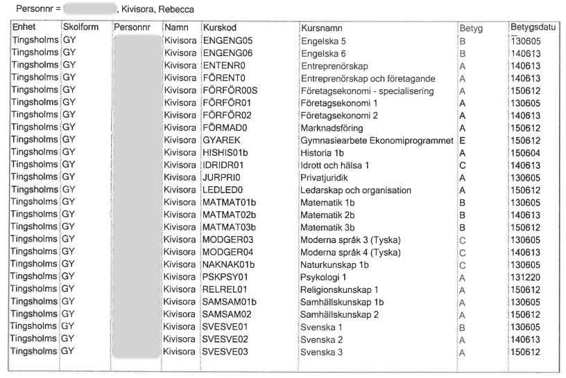

Elektroingenjör, CHALMERS |aug 2019 - juni 2020
-
Inledande matematik, 7.5 hp
-
Tekniskt projekt i elektroteknik, 7.5 hp
-
Kretsanalys, 7.5 hp
-
Matematisk analys i en variabel, 7.5 hp
-
Objektorienterad programering i JAVA, 7.5 hp
-
Linjär algebra, 7.5 hp
-
Grundläggande datorteknik (påbörjad)
Kurser på distans, Hermods |aug 2017 - maj 2019
-
Kemi 1
-
Fysik 1
-
Fysik 2
-
Matematik 4
Ekonomiprogrammet, Tingsholmgsgymnasiet |aug 2012 - juni 2015
-
Läste bland annat företagsekonomi, marknadsföring, svenska, engelska och matematik.
Övrigt
-
Fick under min tid på Tingsholmsgymnasiet två stipendium. Ett för bästa studieresultat på ekonomiprogrammet och ett i litteratur.
-
Hade UF-företag där vi vann flertalet priser på den lokala mässan, samt blev nominerade till Årets monter.
